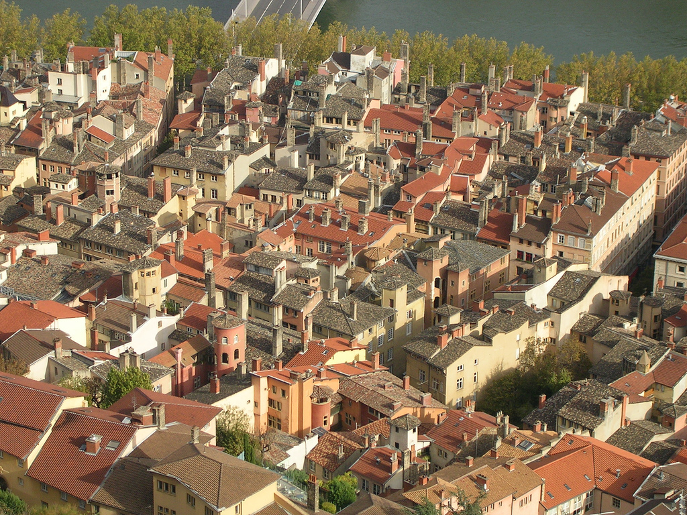
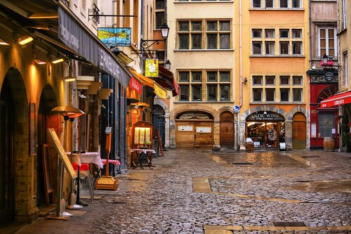
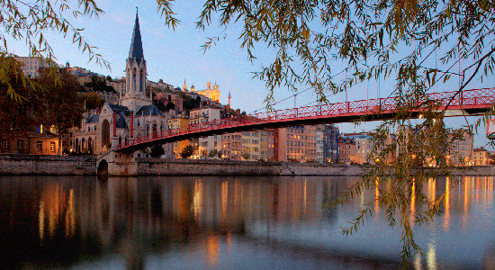

Vieux Lyon — the Old Town of Lyon — is one of the largest Renaissance neighborhoods in Europe and a UNESCO World Heritage Site. Nestled between the banks of the Saône River and the hill of Fourvière, this extraordinary district preserves a remarkable collection of 15th and 16th century architecture that transports visitors back to the golden age of the Florentine merchants and silk traders who made Lyon one of Europe's most prosperous cities.
The three distinct quarters of Vieux Lyon — Saint-Jean, Saint-Paul, and Saint-Georges — are threaded together by narrow cobblestone streets and connected by a network of mysterious covered passageways known as traboules. These unique corridors, some leading through multiple courtyards and stairwells, were originally used by silk weavers to transport their delicate fabrics sheltered from the rain, and later by the French Resistance to move unseen during the Second World War. Today, 40 of the original 315 traboules are open to the public.
At the heart of Vieux Lyon stands the Cathédrale Saint-Jean-Baptiste, a masterpiece of Gothic and Romanesque architecture featuring a remarkable 14th-century astronomical clock. Surrounding the cathedral, the streets are lined with Renaissance hôtels particuliers — grand private residences — whose elegant facades conceal beautiful interior courtyards. Vieux Lyon is also the heart of the city's dining scene, packed with traditional bouchon restaurants serving authentic Lyonnaise cuisine in centuries-old surroundings.


